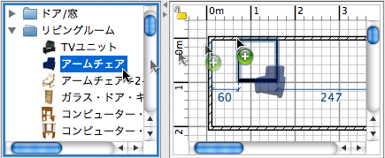

| ドア、窓および家具の追加 | |||
ドア、窓または家具を間取りに追加するには、家具リストまたは間取りプランのカタログから1つ または複数の家具をドラッグ&ドロップします。  また、 家具 > 間取りに追加 、または 間取りに追加 ツール をクリックしてカタログの家具を選択することも できます。
家具リストの家具をドロップした場合、または 家具 > 間取りに追加 メニューから追加したとき、
共に左上隅の位置がポイント(0、0)になります。 家具リストの家具を選択して間取りに追加すると、プランと3Dビューで同時に配置されます。追加した家具の 3Dモデルの読み込み中に、これらの家具は3Dビューで白い箱で表示されます。 |
|